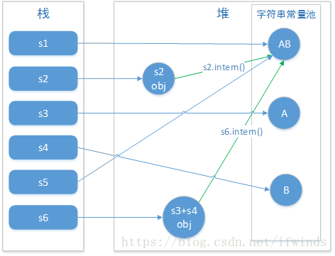

String 类中使用 final 关键字修饰字符数组来保存字符串，private final char value[]，所以 String 对象是不可变的。
StringBuilder 与 StringBuffer 都继承自 AbstractStringBuilder 类，在 AbstractStringBuilder 中也是使用字符数组保存字符串char[] value 但是没有用 final 关键字修饰，所以这两种对象都是可变的。
StringBuilder 与 StringBuffer 的构造方法都是调用父类构造方法也就是 AbstractStringBuilder 实现的:
// AbstractStringBuilder.java
abstract class AbstractStringBuilder implements Appendable, CharSequence {
char[] value;
int count;
AbstractStringBuilder() {
}
AbstractStringBuilder(int capacity) {
value = new char[capacity];
}
线程安全性
String 中的对象是不可变的，也就可以理解为常量，线程安全。AbstractStringBuilder 是 StringBuilder 与 StringBuffer 的公共父类，定义了一些字符串的基本操作，如 expandCapacity、append、insert、indexOf 等公共方法。StringBuffer 对方法加了同步锁或者对调用的方法加了同步锁，所以是线程安全的。StringBuilder 并没有对方法进行加同步锁，所以是非线程安全的。
性能
每次对 String 类型进行改变的时候，都会生成一个新的 String 对象，然后将指针指向新的 String 对象。StringBuffer 每次都会对 StringBuffer 对象本身进行操作，而不是生成新的对象并改变对象引用。相同情况下使用 StringBuilder 相比使用 StringBuffer 仅能获得 10%~15% 左右的性能提升，但却要冒多线程不安全的风险。
对于三者使用的总结：
- 操作少量的数据: 适用String
- 单线程操作字符串缓冲区下操作大量数据: 适用StringBuilder
- 多线程操作字符串缓冲区下操作大量数据: 适用StringBuffer
主要区别：
- String是不可变字符序列，StringBuilder和StringBuffer是可变字符序列。
- 执行速度StringBuilder > StringBuffer > String。
- StringBuilder是非线程安全的，StringBuffer是线程安全的。
String类是我们使用频率最高的类之一，也是面试官经常考察的题目，下面是一个小测验。
public static void main(String[] args) {
String s1 = "AB";
String s2 = new String("AB");
String s3 = "A";
String s4 = "B";
String s5 = "A" + "B";
String s6 = s3 + s4;
System.out.println(s1 == s2);
System.out.println(s1 == s5);
System.out.println(s1 == s6);
System.out.println(s1 == s6.intern());
System.out.println(s2 == s2.intern());
}
运行结果：
false true false true false
解析：真正理解此题目需要清楚以下三点
- 直接使用双引号声明出来的String对象会直接存储在常量池中；
- String对象的intern方法会得到字符串对象在常量池中对应的引用，如果常量池中没有对应的字符串，则该字符串将被添加到常量池中，然后返回常量池中字符串的引用；
- 字符串的+操作其本质是创建了StringBuilder对象进行append操作，然后将拼接后的StringBuilder对象用toString方法处理成String对象，这一点可以用javap -c命令获得class文件对应的JVM字节码指令就可以看出来。
